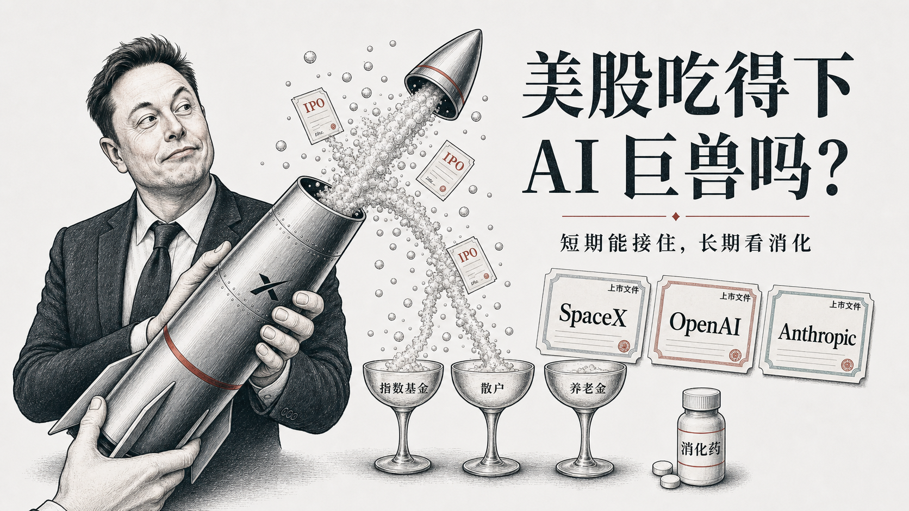
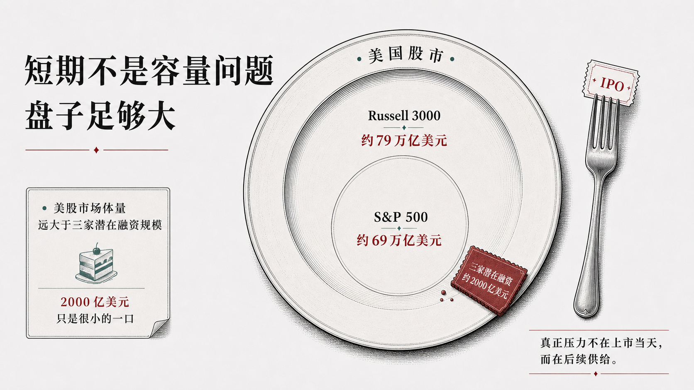
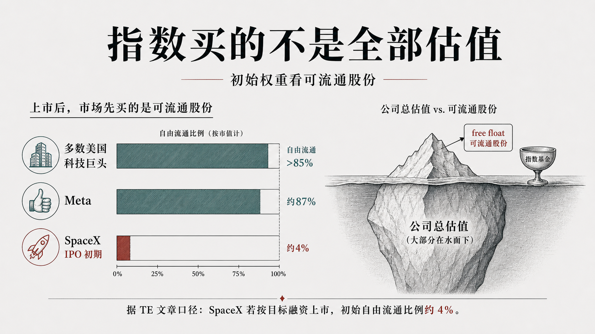
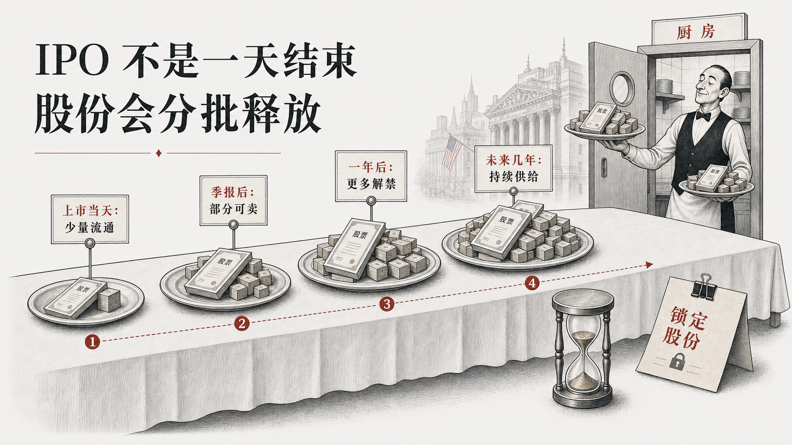
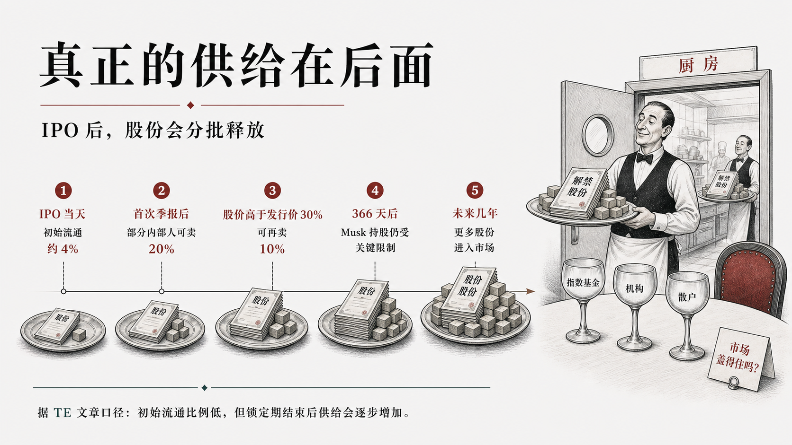
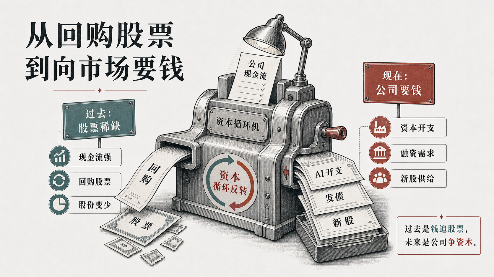

美股吃得下 OpenAI、Anthropic 和 SpaceX 吗？
三家未上市巨兽，可能把一级市场的 AI 想象一次性端上公开市场。

如果 OpenAI、Anthropic 和 SpaceX 这种级别的公司一起冲向公开市场，最直观的问题是：
美股接得住吗？
这不是一个小问题。
SpaceX 代表商业航天和马斯克叙事，OpenAI 代表大模型商业化，Anthropic 代表另一条前沿 AI 公司路线。它们如果陆续上市，不只是几家公司融资，而是把过去几年一级市场里的 AI 想象，搬到公开市场重新定价。
The Economist 这篇文章的判断很有意思：
短期吃得下，长期可能消化不良。
这句话看起来简单，其实把问题分成了两层。
短期问题是：市场有没有足够买盘？
长期问题是：AI 公司会不会持续向市场要钱？
前者不太可怕，后者才值得盯。
一、短期不是容量问题
先看盘子有多大。
美国股市不是一个小饭桌。文章里给了两个参照：
Russell 3000 总市值约 79 万亿美元
S&P 500 总市值约 69 万亿美元
三家公司潜在融资合计约 2000 亿美元级别
2000 亿美元当然大。放在 IPO 历史里，这是巨型事件。
但放进整个美国股市里，它不是一个无法承受的量级。

2000 亿美元级别的融资很大，但放进整个美国股市，不是容量极限。
更关键的是，指数基金一开始也不是按公司全部估值买。
很多指数看的是自由流通市值，而不是公司总估值。也就是说，哪怕 SpaceX 的总估值很高，IPO 初期真正进入公开市场交易的股份比例，也可能只是其中一小部分。
TE 原文第一张数据图讲的就是这个点：总估值像冰山，真正会被指数和公开市场立刻接触到的，是水面上的自由流通部分。
按文中口径，成熟美国科技巨头的自由流通比例大多在 85% 以上，Meta 也约为 87%。而 SpaceX 如果按传闻中的 IPO 结构，初期自由流通比例可能只有约 4%。

真正会被指数和公开市场立刻接触的，是自由流通部分。
所以，上市当天的冲击没有想象中那么夸张。
市场真正要问的不是：
第一天有没有人买？
而是：
后面几年，还有多少股票会慢慢出来？
二、真问题在后面
IPO 不是一天结束。
公司上市时，创始人、员工、早期投资人的股份通常不会立刻全部卖出。这些股份会被锁定一段时间。
等锁定期结束，更多股份会逐步释放到市场。
这才是“消化不良”的来源。
不是第一口吃不下，而是后厨还在继续上菜。

IPO 的第一天不是终点，锁定股份才是后续供给。
TE 原文第二张数据图更具体：SpaceX 的股份不是一次性全进市场，而是沿着 IPO 当天、首次季报后、股价触发条件、366 天限制、未来几年等节点分批释放。

真正考验市场的，不是 IPO 当天，而是后面一批批股份进入市场。
这件事对高估值公司尤其重要。
一家公司很伟大，不等于它任何价格都值得买。
历史上，IPO 后的长期回报并不总是漂亮。尤其是估值已经非常高的公司，上市之后，市场需要不断用真实收入、利润和现金流去验证故事。
AI 公司现在的问题也在这里。
故事足够大，估值足够高，市场情绪足够热。
但公开市场最终会问得更具体：
收入在哪里？
毛利能不能撑住？
算力成本谁来付？
未来还要融多少钱？
三、AI 正在改变资本循环
这篇文章最值得拿出来讲的，不是 IPO 本身，而是资本循环的变化。
过去几年，科技股有一个隐藏支撑：
科技巨头现金流强，持续回购股票。
回购会减少市场上的股票供给。与此同时，指数基金、退休金、长期资金不断买入。于是市场形成一种结构：
钱不断进来，股票相对变少。
这对股价很友好。
但 AI 时代，这个结构可能在变。
大模型、数据中心、算力、云基础设施，都需要巨额资本开支。科技公司不一定还能像过去那样持续大规模回购。
有的公司开始发债，有的公司会减少回购，有的公司会上市融资。
换句话说，科技公司可能从“减少股票供给”，变成“增加资本需求”。

AI 让科技公司从“回购机器”，变成更重资本开支的资本需求方。
这就是文章真正的落点。
它不是在说 OpenAI、Anthropic、SpaceX 能不能上市。
它是在问：
公开市场能不能长期接住 AI 资本需求？
四、真正的问题不是能不能上市
短期看，巨型 IPO 会很热闹。
可能会有抢购，可能会有指数纳入，可能会有媒体狂欢，也可能会有一堆“AI 时代正式进入公开市场”的叙事。
这些都不奇怪。
但更重要的问题在后面：
如果这些公司持续需要资本，如果锁定股份陆续释放，如果科技巨头回购减少，如果 AI 叙事已经占据美股核心权重，那么市场要消化的就不只是一场 IPO。
它要消化的是一个新的资本周期。
过去是钱追股票。
未来可能是公司争资本。
所以，这篇文章最值得记住的判断是：
美股短期可以喝香槟，长期要看消化能力。
真正的问题不是 OpenAI、Anthropic 和 SpaceX 能不能上市。
真正的问题是：市场愿意用多高价格，继续接住 AI 叙事。
来源说明
本文基于 The Economist 文章 Can the stockmarket swallow Anthropic, SpaceX and OpenAI? 做中文二创解读。图片为原创重绘，其中自由流通比例图与解禁路径图参考 TE 原文图表逻辑做中文重绘，不复制 TE 原图，不保存或搬运原文全文。